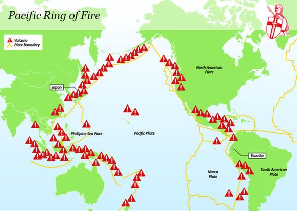

Disaster Preparation Kit
A basic emergency supply kit could include the following recommended items:
- Water: one gallon of water per person per day for at least three days, for drinking and sanitation.
- Food: at least a three-day supply of non-perishable food.
- Battery: powered or hand-crank radio and an NOAA Weather Radio with tone alert.
- Flashlight
- First aid kit
- Extra batteries
- Whistle to signal for help.
- Dust mask to help filter contaminated air and plastic sheeting and duct tape to shelter-in-place.
- Moist towelettes, garbage bags and plastic ties for personal sanitation.
- Wrench or pliers to turn off utilities.
- Manual can opener for food.
- Local maps
- Cell phone with chargers and a backup battery.
Additional Emergency Supplies
- Prescription medications
- Non-Prescription medications
- Glasses and contact lens solution.
- Infant formula, bottles, diapers, wipes, diaper rash cream.
- Pet food and extra water for your pets.
- Cash or traveler's checks.
- Important family documents such as copies of insurance policies, identification, and bank account records saved electronically or in a waterproof portable container.
- Sleeping bag or warm blanket for each person.
- Complete change of clothing appropriate for your climate and sturdy shoes.
- Household chlorine bleach and medicine dropper to disinfect water.
- Fire extinguisher
- Matches in a waterproof container.
- Feminine supplies and personal hygiene items.
- Mess kits, paper cups, plates, paper towels, and plastic utensils.
- Paper and pencil
- Books, games, puzzles or other activities for children.
Maintaining your kit
- Keep canned food in a cool, dry place.
- Store-based food in a tightly closed plastic or metal containers.
- Replace expired items as needed.
- Re-think your needs every year and update your kit as your family's needs change.
Kit Storage Locations
- Home: Keep this kit is a designated place and have it ready in case you have to leave your home quickly. Make sure all family members know where the kit is kept.
- Work: Be prepared to shelter at work for at least 24 hours. Your work kit should include food, water and other necessities like medicine, as well as comfortable walking shoes, stored in a "grab and go" case.
- Vehicle: In case you are stranded, keep a kit of emergency supplies in your car.
Tornadoes
What are tornadoes?
Tornadoes are vertical funnels of rapidly spinning air. They are born in thunderstorms and are often accompanied by hail, with giant, persistent thunderstorms called supercells being known to spawn the most destructive tornadoes.
What causes tornadoes?
Tornadoes form when warm, humid air collides with cold, dry air. When the denser cold air is pushed over the warm air, thunderstorms are produced. When the warm air rises through the colder air, it causes an updraft that will begin to rotate if winds vary in speed or direction.
The rotating updraft, which is called a mesocycle, draws in more warm air from the thunderstorm, the rotation speed increases. The cold air from the jet stream provides more energy, and water from the moist air helps form the funnel cloud. Once the funnel cloud touches the ground, it becomes a tornado.
Where are they common?
While tornadoes can happen anywhere, they are most common in the Great Plains, otherwise known as Tornado Alley. This is caused by the cold, dry air coming down from Canada meeting the warm, moist air traveling from the Gulf of Mexico.
Enhanced Fujita Scale
| EF Rating |
Class |
Wind Speed (MPH-KM/J) |
| EF-0 |
weak |
65-85 / 105-137 |
| EF-1 |
weak |
86-110 / 137-177 |
| EF-2 |
strong |
111-135 / 178-217 |
| EF-3 |
strong |
136-165 / 218-266 |
| EF-4 |
violent |
166-200 / 267-322 |
| EF-5 |
violent |
>200 / >322 |
How to Stay Safe when a Tornado Threatens
Prepare Now
- Know your area's tornado rise. In the U.S., the midwest and the Southeast have a greater risk for tornadoes.
- Know the signs of a tornado, including a rotating, funnel-shaped cloud; an approaching cloud of debris; or a loud roar-similar to a freight train.
- Pay attention to weather reports. Meteorologists can predict when conditions might be right for a tornado.
Survive During
- Immediately go to a safe location that you have identified.
- Take additional cover by shielding your head and neck with your arms, as well as putting furniture and blankets around you.
- Listen to EAS, NOAA Weather Radio, or your local alert system for current emergency information.
- Do not try to outrun a tornado in your vehicle.
- If you are in a car or outdoors, and cannot get to a building, cover your head and neck with your arms and cover your body with a coat or blanket.
Be Safe After
- Keep listening to EAS, NOAA Weather Radio, or your local authorities for information.
- If you are trapped, cover your mouth with a cloth to avoid breathing in dust.
- Stay clear of fallen power lines or broken utility lines.
- Do not enter damaged buildings until you are told that they are safe.
- Save your phone calls for emergencies. Use text messages or social media to communicate with family or friends, as phone services are either down or busy after a disaster.
- Be careful during clean-up. Wear thick-soled shoes, long pants, and work gloves.
Hurricanes
What are hurricanes?
Hurricanes are large, swelling storms that form over warm ocean waters. When a hurricane reaches land, it pushes a wall of ocean water, called a storm surge, ashore. The storm surge and heavy rain from a hurricane can cause flooding.
How does a storm become a hurricane
A hurricane starts as a tropical disturbance. This is an area over warm ocean waters where rain clouds are building.
A tropical disturbance sometimes grows into a tropical depression. This is an area of rotating thunderstorms with winds of 62 km/hr (38 mph) or less.
A tropical depression becomes a tropical storm if its winds reach 63 km/hr (39 mph).
A tropical storm becomes a hurricane if its winds reach 119 km/hr (74 mph).
Parts of a hurricane
- Eye: the eye is the "hole" at the center of the storm. Winds are light in this area. Skies are partly cloudy, and sometimes even clear.
- Eye Wall: the eyewall is a ring of thunderstorms. These storms swirl around the eye. The wall is where winds are strongest and rain is heaviest.
- Rain Bands: bands of clouds and rain go far out from a hurricane's eyewall. These bands stretch for hundreds of miles. They contain thunderstorms and sometimes tornadoes.
Hurricane Categories
| Category |
Wind Speed (MPH - KM/HR) |
| Category 1 |
74-95 / 119/153 |
| Category 2 |
96-110 / 154/177 |
| Category 3 |
111-129 / 178/208 |
| Category 4 |
130-165 / 209/251 |
| Category 5 |
>157 / >252 |
How to Stay Safe when a Hurricane Threatens
Prepare Now
- Know your area's risk of hurricanes.
- If you are at risk for flash flooding, watch for warning signs such as heavy rain.
- Based on your location and community plans, make your plans for evacuation or sheltering in place.
- Become familiar with your evacuation zone, the evacuation route, and shelter locations.
- Gather needed supplies for at least three days. Keep in mind each person's specific needs, as well as pets.
- Keep important documents in a safe place or create password-protected digital copies.
- Protect your property. Declutter drains and gutters. Install check valves in plumbing to prevent backups. Consider hurricane shutters and review insurance policies.
When a hurricane is 18-36 hours from arriving
- Bookmark your city or county website for quick access to storm updates and emergency instructions.
- Bring loose, lightweight objects inside that could become projectiles in high winds; and trim or remove trees close enough to fall on the building.
- Cover your home's windows. Permanent storm shutters offer the best protection for windows.
When a hurricane is 6-18 hours from arriving
- Turn on your TV/radio, or check your city/county website every 30 minutes to get the latest weather updates and emergency instructions.
- Charge your cell phone now so you will have a full battery in case you lose power.
When a hurricane is less than 6 hours from arriving
- If you're not in an area that is recommended for evacuation, plan to stay at home or where you are and let friends and family know where you are.
- Close storm shutters, and stay away from windows. Flying glass from broken windows could injure you.
- Turn your refrigerator or freezer to the coldest setting and open only when necessary. Keep a thermometer in the refrigerator to be able to check the food temperature when the power is restored.
- Turn on your TV/radio, or check your city/county website every 30 minutes to get the latest weather updates and emeregency instructions.
Survive During
- If told to evacuate, do so immediately. Do not drive around barricades.
- If sheltering during high winds, go to a FEMA safe room, ICC storm shelter, or a small, interior, windowless room or hallway on the lowest floor that is not subject to flooding.
- If trapped in a building by flooding, go to the highest level of the building. Do not climb into the closed attic. You may become trapped by rising floos waters.
- Listen for current emergency information and instructions.
- Use a generator or other gasoline-powered machinerry outdoors ONLY and away from windows.
- Do not walk, swim, or drive through flood waters. Just six inches of fast-moving water can knock you down, and one foot of moving water can sweep your vehicle away.
- Stay off of bridges over fast-moving water.
Be Safe After
- Listen to authorities for information and special instructions.
- Be careful during clean0up. Wear protetive clothing and work with someone else.
- Do not touch electrical equipment if it is wet of if you are standing in water. If it is safe to do so, turn off electricity at the main breaker or fuse box to prevent electric shock.
- Avoid wading in flood water, which can contain dangerous debris. Underground or downed power lines can also electrically charge water.
- Save phone calls for emergencies. Use text messages or social media to communicate with family and friends.
- Document any property damage with photographs. Contect your insurance company for assistance.
Earthquakes
What are earthquakes?
An earthquake happens when two tectonic plates slip past one another. The location below the earth's surface where the earthquake starts is called the hypocenter, with the location above on the surface called the epicenter.
Before an earthquake, there are sometimes foreshocks, which happen in the same place the larger earthquake will occur. The largest, main earthquake is called the mainshock, with the aftershocks follow. And depending on the size of the mainshock, aftershocks can continue for weeks, months, and in some cases, years.
Where do they occur?
Most earthquakes occur along the edge of oceanic and continental plates. The earth's crust is made up of several pieces, called plates, that are moved around by the mantle, which lies under the crust. As these plates move, they are bumping, pulling apart, or sliding past one another. An earthquake will occur when two plates either bump into or slide past one another.
How are they recorded?
Earthquakes are recorded using a seismographic network. A seismograph consists of a mass attached to a fixed base, so, during an earthquake, the base moves and the mass does not. The motion of the base moving in respect to the mass is transformed into an electrical voltage, which is either recorded on paper, magnetic tape, or another recording medium.
Richer Scale
| Magnitude |
Force |
Frequency |
| <2.0 |
Micro |
8,000 per day (est.) |
| 2.0-2.9 |
Minor |
1,000 per day (est.) |
| 3.0-3.9 |
Very Light |
49,000 per year (est.) |
| 4.0-4.9 |
Light |
6,000 per year (est.) |
| 5.0-5.9 |
Moderate |
800 per year |
| 6.0-6.9 |
120 |
800 per year |
| 7.0-7.9 |
Major |
18 per year |
| 8.0-8.9 |
Great |
1 per year |
| 9.0-9.9 |
Extreme |
1 per 20 yearsr |
| >10.0 |
Epic |
Unknown |
How to Stay Safe when an Earthquake Threatens
Prepare Now
- Secure items, such as TV's, and objects that hang on walls. Store heavy and breakable objects on low shelves.
- Practice Drop, Cover, then Hold On with family and coworkers. Drop to your hands and knees, cover your head and neck with your arms. Crawl only as far as needed to reach cover from falling materials, and hold onto any sturdy furniture until the shaking stops.
- Create a family emergency communications plan that has an out-of-state contact, and plan where to meet if you get separated.
- Consider obtaining an earthquake insurance policy. Standard homeowner's insurance does not cover earthquake damage.
- Consider a retrofit of your building to correct structural issues that make it vulnerable to collapse during an earthquake.
Survive During
- Drop, Cover, then Hold On as you practiced.
- If in bed, stay there and cover your head and neck with a pillow.
- If inside, stay there until the shaking stops. DO NOT run outside.
- If in a vehicle, stop in a clear area that is away from buildings, trees, overpasses, underpasses, or utility wires.
- If you are in a high-rise building, expect fire alarms and sprinklers to go off. DO NOT use elevators.
- If near slopes, cliffs, or mountains, be alert for falling rocks and landslides.
Be Safe After
- Expect aftershocks to follow the largest shock of an earthquake.
- Check yourself for injury and assist others if you have training.
- If in a damaged building, go outside and quickly move away from the building.
- DO NOT enter the damaged building.
- If you are trapped, cover your mouth.
- If you are in an area that experiences tsunamis, go inland or to higher ground immediately after the shaking stops.
- Save phone calls for emergencies.
- Once safe, monitor local news reports via battery-operated radio, TV, social media, or cell phone text alerts for emergency information and instructions.
- Use extreme caution during post-disaster clean-up of buildings and around debris. Do not attempt to remove heavy debris by yourself. Wear protective clothing, including a long-sleeved shirt, long pants, work gloves, and sturdy, thick-soled shoes during clean-up.
Tsunamis
What are tsunamis?
Tsunamis, also known as seismic sea waves, are a series of enormous waves that are created by an underwater disturbance, such as an earthquake, landslide, volcanic eruption, or meteorite. A tsunami can travel for hundreds of miles per hour in the open ocean and smash into land with waves as high as 100 feet, or even more.
Where are they common?
Tsunamis can occur in all large bodies of water but are more common in the Pacific Ocean. This is not only due to its size, but also due to the series of mountains, deep-ocean trenches, and the "ring of fire" (off the coasts of Kamchatka, Japan; the Kuril Islands; Alaska and South America).
How are they detected?
Tsunamis are detected using open-ocean buoys and by coastal tide gauges. The information from these instruments is reported back in real-time to tsunami warning centers (one in Alaska and another in Hawaii). Warning centers also use earthquake (seismic) data to estimate the strength of the tsunamis from the character of an earthquake, since seismic waves travel faster than tsunamis.
How to Stay Safe when a Tsunami Threatens
Prepare Now
- If you live near, or regularly visit a coastal area, learn about the risk of tsunamis in the area. Some at-risk communities have maps with evacuation zones and routes.
- Learn the signs of a potential tsunami, such as an earthquake, a roar from the ocean, or unusual ocean behavior, such as a sudden rise or wall or water, or a sudden drain of water.
- Know and practice community evacuation plans and map out your routes from home, work, and play. Pick shelters 100 feet or move above sea level, and at least one mile inland.
- Consider earthquake insurance and a flood insurance policy.
Survive During
- If you are in a tsunami area and there is an earthquake, first protect yourself from the earthquake.
- When the shaking stops, if there are natural signs or official warnings of a tsunami, then move immediately to a safe place as high and as far inland as possible. Listen to the authorities, but do not wait for tsunami warnings and evacuation orders.
- If you are outside of the tsunami hazard zone and receive a warning, stay where you are unless officials tell you otherwise.
- If you are in the water, then grab onto something that floats, such as a raft, tree trunk, or door.
- If you are in a boat, then face the direction of the waves and head out to sea. If you are in a harbor, then go inland.
Be Safe After
- Listen to local alerts and authorities for information on areas to avoid and shelter locations.
- Avoid wading in floodwater, which can contain dangerous debris. Water may also be deeper than it appears.
- Be aware of the risk of electrocution. Underground or downed power lines can electrically charge water.
- Stay away from damaged buildings, roads, and bridges.
- Document property damage with photographs. Conduct an inventory and contact your insurance company for assistance.
- Save phone calls for emergencies.
Wildfires
What are wildfires?
Wildfires are uncontrolled blazes fueled by weather, wind, and dry underbrush. They can burn acres of land in mere minutes. On average, more than 10,000 wildfires clear between 4-5 million acres of land in the U.S. alone every year.
How are they formed?
There must be three conditions present for a wildfire to burn: fuel, oxygen, and a heat source Fuel is any flammable material surrounding a fire, air supplies the oxygen a fire needs to burn, while a heat source helps spark the wildfire and bring fuel to temperatures hot enough ignite.
Four out of five wildfires are caused by people, whether it's by leaving burning campfires or cigarettes. And while they can happen everywhere in the world, they are most common in the U.S. West, where heat, drought, and frequent thunderstorms create perfect wildfire conditions.
How to fight them
To fight wildfires, firefighters deprive them from one or more of the 3 elements needed. Traditionally, this includes water dousing and spraying fire retardants to extinguish existing fires. It also includes clearing vegetation to create firebreaks to starve a fire.
How to Stay Safe when a Wildfire Threatens
Prepare Now
- Sign up for your communities warning system.
- Know your communities evacuation plans and find several ways to leave the area. Drive the evacuation routes and find shelter locations, as well as have a plan for pets and livestock.
- Designate a room that can be closed off from outside air. Close all doors and windows, and set up a portable air cleaner to keep indoor pollution levels low when smoky conditions exist.
- Keep important documents in a fireproof, safe place. Create password-protected digital copies.
- Use fire-resistant materials to build, renovate, or make repairs.
- Find an outdoor water course with a hose that can reach any area of your property.
- Create a fire-resistant zone that is free of leaves, debris, or flammable materials for at least 30 feet from your house.
- Review insurance coverage to make sure it is enough to replace your property.
Survive During
- Evacuate immediately if authorities tell you to do so.
- If trapped, then call 911 and give your locations, but be aware that emergency repsonse could be delayed or impossible. Turn on lights to help rescuers find you.
- Listen to EAS, NOAA Weather Radio, or your local alert system for current emergency information and instructions.
- Use a N95 mask to keep harmful particles out of the air you breathe.
- If you are not ordered to evacuate but smoky conditions exist, stay inside a safe location or go to a community building where smoke levels are level.
Be Safe After
- Listen to authorities to find out when it is safe to return, and whether the water is safe to drink.
- Avoid hot ash, charred trees, smoldering debris, and live embers. The ground many contain heat pockets that can burn you or spark another fire.
- Wear a NIOSH certified-respirator dusk mask and wet debris to minimize breathing in dust particles.
- Document property damage with photographs. Conduct an inventory and contact your insurance company for assistance.
- Wildfires can dramatically change landscape and ground conditions, which can lead to increased risk of flooding due to heavy rains, flash flooding, and mudflows.
Volcanoes
What are volcanoes
Volcanoes are an opening in Earth's crust that allows molten rock to reach the surface. The molten rock is called magma while it is below the surface, but called lava once a volcano erupts.
Where are they common?
Most volcanoes are common along the Pacific Ocean, in an area that is referred to as the "Ring of Fire". This is because the Pacific Plate is surrounded several continental plates. The movement of these plates create zones under the other. This causes the formation of volcanoes, and the occurance of earthquakes.

Active Volcanoes
In the world today, there are potentionally 1,500 active volcanoes, not counting the continuous belt of volcanoes on the ocean floor. Out of all of these, about 500 of them have erupted in historical time, with many of them being located in the "Ring of Fire".
Types of volcanoes
There are 4 major types of volcanoes:
- Cinder Cone Volcanoes: the simplest type of volcano. They occur when particles and blocs of lava are ejected from a volcanic vent. Over time, this builds up a circular or oval-shaped cone, with a bowl-shaped crater at the top.
- Composite Volcanoes: or stratovolcanoes make up some of the world's most memorable mountains: Mount Rainier, Mount Fiji, and Mount Cotopaxi. These volcanoes have a conduit system inside them that channel magma from deep within the Earth.
- Shield Volcanoes: are large, broad volcanoes that look like shields from above. The lava flows out from these is thin, so it can travel for great distances.
- Lava Domes: are created by small masses of lava which are too thick to flow very far. The dome grows by expansion of the lava within, and the mountain forms from material spilling off the sides.
How to Stay Safe when a Volcanic Eruption Threatens
Prepare Now
- Know your area's risk for volcanic eruptions.
- Ask local emergency management for evacuation and shelter plans, and potential means of protection from ash.
- Learn about community warning systems.
- Get necessary supplies in advance in case you have to evacuate immediately, or if services are cut off.
- Consult your doctor if you have existing respiratory difficulties.
- Practice a communication and evacuation plan with everyone in your family.
- Have a shelter-in-place if your biggest risk is from ash.
- Have important documents in a safe place. Create password-protected digital copies.
- Find out what your homeowner's insurance policy will cover when a volcano erupts.
Survive During
- Listen to alerts. The Volcano Notification Service provides up-to-date information about eruptions.
- Follow evacuation orders from local authorities. Evacuate early.
- Avoid areas downwind, and river valleys downstream of the volcano. Rubble and ash will be carried by wind and gravity.
- Take temporary shelter from volcanic ash where you are if you have enough supplies. Cover ventilation openings and seal doors and windows.
- If outside, protect yourself from falling ash that can irritate skin and injure breathing passages, eyes, and open wounds. Use a well-fitting, certified facemask such as an N95.
- Avoid driving in heavy ashfall.
Be Safe After
- Send text messages or use social media to reach out to family and friends. Phone systems are often busy after a disaster.
- Avoid driving in heavy ash. Driving will stir up volcanic ash that can clog engines and stall vehicles.
- If you have any breathing problems, avoid contact with ash. Stay indoors until authorities say it is safe to go outside.
- Do not get on your roof to remove ash unless you have guidance or training. If you have to remove ash, then be very careful as ash makes surfaces slippery. Be careful not to contribute additional weight to an overloaded roof.
Floods
What are floods?
Flooding is an overflow of water onto land that is normally dry. They can occur during heavy rains, when open waves come onshore, when the snow melts too fast, or when a dam breaks. They can either occur quickly or over a long time. The most dangerous kind of flooding is flash floods, as they combine both speed and unpredictability.
Areas at risk of flash flooding
Densely populated areas are at high risk, as buildings, highways, driveways, and parking lots increase runoff.
Areas near rivers are at risk, though leaves are often built along rivers to help prevent high water from flooding bordering land. Though, there have been instances when these leaves have failed, resulting in devastating flash flooding.
Dam failures can send a sudden destructive wall of water downstream, resulting in feet of water flooding downstream.
How to Stay Safe when a Flood Threatens
Prepare Now
- Know types of flood risks in your area.
- Sign up for your community warning system.
- If flash flooding is a risk in your location, then monitor potential signs, such as heavy rain.
- Gather supplies in case you have to leave immediately, or if services are cut off.
- Purchase or renew a flood insurance policy. If typically takes up to 30 days for a policy to go into effect, but it can protect the life you've built.
- Keep important documents in a waterproof container. Create password-protected digital copies.
- Protect your property. Move valuables to higher levels. Declutter drains and gutters, install check valves and consider a sump pump with a battery.
Survive During
- Depending on where you are, and the impact and the warning time of flooding, go to the safe location that you previously identified.
- If told to evacuate, do so immediately. Never drive around barricades, local responders use them to safely direct traffic out of flooded areas.
- Do not walk, swim, or drive through floodwaters. Turn-Around. Don't Drown!
- Stay off bridges over fast-moving water. Fast-moving water can wash bridges away without warning.
- If your vehicle is trapped in rapidly moving water, then stay inside. If water is rising inside the vehicle, then seek refuge on the roof.
- If trapped in a building, then go to its highest level. Do not climb into a closed attic. You may become trapped by rising floodwater. You may become trapped by rising floodwater. Go on the roof only if necessary. Once there, signal for help.
Be Safe After
- Listen to authorities for information and instructions. Return home only when authorities say it is safe.
- Avoid driving, except in emergencies.
- Snakes and other animals may be in your house. Wear heavy gloves and boots during clean up.
- Be aware of the risk of electrocution. Do not touch electrical equipment if it is wet or if you are standing in water.
- Avoid wading in floodwater, which can contain dangerous debris and be contaminated.
- Use a generator or other gasoline-powered machinery ONLY outdoors and away from windows.
Blizzards
What are blizzards?
A blizzard is a storm with "considerable falling or blowing snow" and winds in excess of 35 mph, as well as visibilities of less than 1/4 mile for at least 3 hours.
Why are they dangerous?
Blizzards are dangerous as they can create life-threatening conditions. Driving can become difficult, or even impossible due to "whiteout" conditions and drifting snow. Strong winds and cold temperatures also create another danger. Especially in the Midwest, where wind chills can be below -65F, frostbite, and hypothermia can set in fast. Blizzards can also cause power outages and pipes to freeze.
Types of blizzards
- Snowstorm-Type Blizzard: this is the "traditional" blizzard. This means that will often include heavy snowfall and below-freezing temps. What makes it a blizzard is the winds of at least 35 mph.
- Ground Blizzard: the difference from a traditional blizzard is that there is no snowfall. This occurs when high winds blow the snow that has already fallen.
- Lake-Effect Blizzard: these are most common along large lakes, such as the Great Lakes. These types of blizzards are rare, only because lake-effect snow doesn't often rise when the wind blows too fast.
How to Stay Safe when a Blizzard Threatens
Prepare Now
- Know your area's risk for winter storms. Extreme winter weather can leave communities without utilities or other services for long periods.
- Prepare your home to keep out the cold with insulation, caulking, and weather stripping. Learn how to keep pipes from freezing. Install and test smoke alarms and carbon monoxide detectors with battery backups.
- Pay attention to weather reports and warnings of freezing weather and winter storms.
- Gather supplies in case you need to stay home for several days without power.
- Create an emergency supply kit for your car. Include jumper cables, sand, a flashlight, warm clothes, blankets, bottled water, and non-perishable snacks. Keep the gas tank full.
- Learn the signs of, and basic treatments for, frostbite and hypothermia.
Survive During
- Stay off roads if at all possible. If trapped in your car, then stay inside.
- Limit your time outside. If you need to go outside, then wear layers of warm clothing. Watch for signs of frostbite and hypothermia.
- Avoid carbon monoxide poisoning. Only use generators and grills outdoors and away from windows. Never heat your home with a gas stovetop or oven.
- Reduce the risk of a heart attack. Avoid overexertion when shoveling snow.
- Watch for signs of frostbite and hypothermia and begin treatment right away.
- Check on neighbors. Older adults and young children are more at risk in extreme cold.
Recognize and Respond
- Frostbite causes loss of feeling and color around the face, fingers, and toes.
- Signs: Numbness, white or grayish-yellow skin, firm or waxy skin.
- Actions: Go to a warm room. Soak in warm water. Use body heat to warm. Do not massage or use a heating pad.
- Hypothermia is unusually low body temperature. A temperature below 95 degrees is an emergency.
- Signs: Shivering, exhaustion, confusion, fumbling hands, memory loss, slurred speech, or drowsiness.
- Actions: Go to a warm room. Warm the center of the body first-chest, neck, head, and groin. Keep dry and wrapped in warm blankets, including the head and neck.
Droughts
What are droughts?
Droughts are periods of abnormally dry and precipitation-less weather. A misconception is that droughts are brought on by periods of no rain or snow, and while this is common, the onset of a drought may be less noticeable. If snow or rain is in fewer amounts, such as a drizzle here and flurries there, instead of a steady rain or snow showers, this can also be an indication a drought is on its way.
How droughts hurt
- Economic Impacts: this includes the loss of timber, agriculture, and fisheries. This can cause an increase in food prices, and in less developed countries, famine can become a problem.
- Social Impacts: increased chance of conflict over commodities, fertile land, and water resources. It can also include abandonment of cultural traditions, loss of homelands, changes in lifestyle, and an increased chance of health risks.
- Environmental Impacts: loss in species biodiversity, migration changes, reduced air quality, and increased soil erosion.
Types of droughts
- Hydrological Drought: watersheds experience depleted amounts of available water. Lack of water in rivers and reservoirs can impact hydroelectric power companies, farmers, wildfire, and communities.
- Meteorological Drought: a lack of precipitation is the most common definition of a drought.
- Agricultural Drought: when soil moisture becomes a problem. Shortages in precipitation, changes in evapotranspiration, and reduced groundwater levels can create stress and problems for crops.
Drought Severity Classification
| Category |
Description |
Possible Imapcts |
Palmer Drought Index |
CPC Soil Moisture Model (Percentiles) |
USGS Weekly Streamflow (Percentiles) |
Standardized Precipitation Index (SPI) |
Objective Short and Long-term Drought Indicator Blends (Percentiles) |
| D0 |
Abnormally Dry |
Goind into drought: short-term dryness slowing planting, growth of crops or pastures. Coming out of drought: some lingering water-deficits; pastures or crops not fully recovered. |
-1.0 to -1.9 |
21-30 |
21-30 |
-0.5 to -0.7 |
21-30 |
| D1 |
Moderate Drought |
Some damage to crops, pastures; streams, reservoirs, or wells low, some water shortages developing or imminent; voluntary water-use restrictions requested. |
-2.0 to -2.9 |
11-20 |
11-20 |
-0.8 to -1.2 |
11-20 |
| D2 |
Severe Drought |
Crop or pasture losses likely; water shortages common; water restrictions imposed. |
-3.0 to -3.9 |
6-10 |
6-10 |
-1.3 to -1.5 |
6-10 |
| D3 |
Extreme Drought |
Major crop/pasture losses; widespread water shortages or restrictions |
-4.0 to -4.9 |
3-5 |
3-5 |
-1.6 to -1.9 |
3-5 |
| D4 |
Exceptional |
Exceptional and widespread crop/pasture losses; shortages of water in resivoirs, streams, and wells creating water emergencies. |
-5.0 or less |
0-2 |
0-2 |
-20 or less |
0-2 |
How to Stay Safe when a Drought Threatens
Indoor Water Conservation Tips Prior to a Drought
- General
- Never pour water down the drain when there may be another use for it.
- Repair dripping faucets by replacing washers.
- Check all plumbing for leaks and have any leaks repaired by a plumber.
- Retrofit all household faucets by installing aerators with flow restrictors.
- Install an instant water heater in your sink.
- Insulate a water-softening system only when the minerals in the water would damage your pipes. Turn the softener off while on vacation.
- choose appliances that are more energy and water-efficient.
- Bathroom
- Consider purchasing a low-volume toilet that uses less than half the water of older models.
- Install a toilet displacement device to cut down on the amount of water needed to flush. Place a one-gallon plastic jug of water into the tank to displace toilet flow.
- Replace your showerhead with an ultra-low-flow version.
- Kitchen
- Start a compost pile as an alternate method of disposing of food waste or simply dispose of food in the garbage.
Outdoor Water Conservation Tips Prior to a Drought
- General
- Check your well pump periodically. If the automatic pump turns on and off while water is not being used, then you have a leak.
- Plant native and/or drought-tolerant grasses, ground covers, shrubs, and trees. Group plants together based on similar water needs.
- Install irrigation devices that are the most water-efficient for each use, such as micro and drip irrigation, and soaker hoses.
- Use mulch to retain moisture in the soil.
- Avoid purchasing recreational water toys that require a constant stream of water.
- Avoid installing ornamental water features unless they use recirculated water.
- Consider rainwater harvesting where practical.
- Contact your local water provider for information and assistance.
Indoor Water Conservation Tips While in a Drought
- Bathroom
- Avoid flushing the toilet unnecessarily. Dispose of tissues, insects, and other similar waste in the trash rather than the toilet.
- Avoid taking baths - take short showers - turn on the water only to get wet and lather, and then again to rinse off.
- Avoid letting the water run while brushing your teeth, washing your face or shaving.
- Place a bucket in the shower to catch excess water for watering plants.
- Kitchen
- Operate automatic dishwashers only when they are fully loaded.
- Hand wash dishes by filling two containers - one with soapy water and the other with rinse water containing a small amount of chlorine bleach.
- Clean vegetables in a pan filled with water rather than running water from the tap.
- Store drinking water in the refrigerator. Do not let the tap run while waiting for water to cool down.
- Avoid wasting water waiting for it to get hot, capture it for other uses.
Outdoor Water Conservation Tips While in a Drought
- Lawn Care
- Avoid overwatering your lawn and water only when needed.
- Check the soil moisture levels with a soil probe, spade, or large screwdriver. You don't need to water if the soil is still moist.
- If your lawn does require watering, do so when the temperature is cool.
- Water in several short sessions, rather than one large one, for your lawn, to better absorb moisture and avoid runoff.
- Use a broom or blower instead of a hose to clean leaves and debris from your driveway or sidewalk.
- Avoid leaving sprinklers or hoses unattended.
- In extreme drought, allow lawns to die in favor of preserving trees and large shrubs.